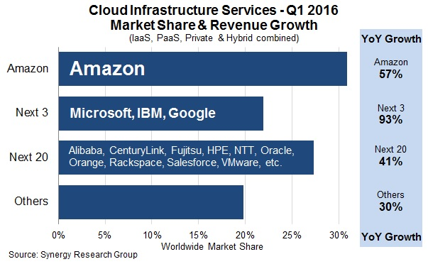
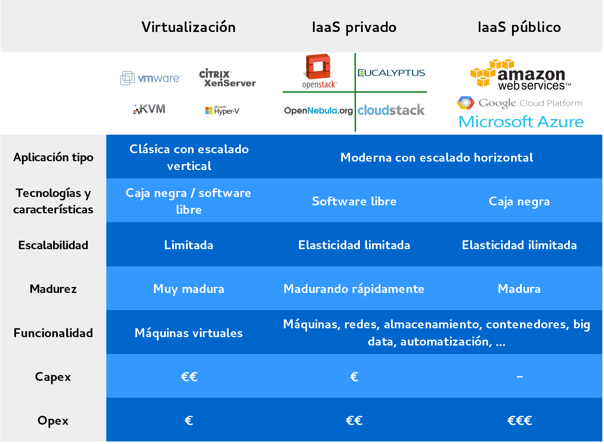

IaaS con software libre
Sevilla-Málaga, 5 y 6 de Julio de 2016
Theme by: reveal.js
{kind=link}
Evolución de la infraestructura
Evolución de la infraestructura
¿Qué es infrastructura?
Procesadores, redes y equipos para almacenamiento de datos
Evolución
- Servidores físicos
- Máquinas virtuales
- Infraestructura en nube
Infraestructura tradicional
- Adquisición de equipos
- Montaje físico
- Conexión a red
- Instalación "manual" y configuración del SO
- Almacenamiento SAN o NAS
- Infraestructua estática
- Se mantienen las configuraciones durante años
- El usuario NO gestiona la infraestructura
Máquinas virtuales
- Varias MVs por cada nodo físico
- MVs gestionadas por el hipervisor
- MVs conectadas a través de redes virtuales
- Sin cambios significativos en almacenamiento
- Gestión similar a los servidores físicos
Infraestructura en nube
- Máquinas virtuales
- Virtualización de redes
- Virtualización del almacenamiento
- Agrupamiento de recursos
- Infraestructura dinámica
- Configuración automática
- El usuario SÍ gestiona su infraestructura
De la nube pública a la privada
The NIST Definition: Características esenciales
- Servicio bajo demanda
- Acceso por red
- Agrupamiento de recursos
- Elasticidad
- Pago por uso
The NIST Definition: Modelos de despliegue
- Nube pública
- Nube privada
- Nube híbrida
The NIST Definition: ... como servicio
- Software as a Service (SaaS)
- Platform as a Service (PaaS)
- Infrastructure as a Service (IaaS)
- Referencia:

¿Serverless?

Fuente: A brief history of cloud compute: IAAS, PAAS, serverless.
¿Por qué una nube privada?
- El software de gestión de nubes se está convirtiendo en un componente clave de los centros de datos
- Las nubes públicas están bien, pero ...
- Privacidad, seguridad, control de los datos
- Vendor lock-in
- Personalización
- ¿Rendimiento?
- ¿Coste?
Infrastructure as a Service
- Nube pública IaaS: AWS, GCE y Azure. ¿Hay espacio para alguien más? ¿es esto lo que queremos?
- Nube privada: Plataformas de software libre
Cloud Infrastructure Services - Q1 2016
Fuente: Big Four Still Dominate in Q1 as Cloud Market Growth Exceeds 50%
Panorama IaaS
IaaS con software libre
CloudStack
- Inicialmente cloud.com
- Comprado por citrix en 2011
- Donado a la Apache Software Foundation en 2012
- Focalizado en la compatibilidad con AWS
- Ene 2016: Citrix vende CloudPlatform y CloudPortal a Accelerite
- http://cloudstack.apache.org/
Eucalyptus
- El proyecto más antiguo
- Focalizado en la compatibilidad con AWS
- Inicialmente licencia mixta (Open core)
- euca2ools: CLI compatible con AWS (libre)
- Desarrollado principalmente por Eucalyptus Systems
- En Sept. 2014 HP compra Eucalyptus Systems
- http://www8.hp.com/us/en/cloud/helion-eucalyptus-overview.html
OpenNebula
- Data Center Virtualization Software
- Se postula como rival de VMware vCloud
- Compatible con AWS EC2 API
- OpenNebula Marketplace
- http://opennebula.org/
Algunos datos sobre estos proyectos
Charla de Bitergia en el OpenStack Summit: